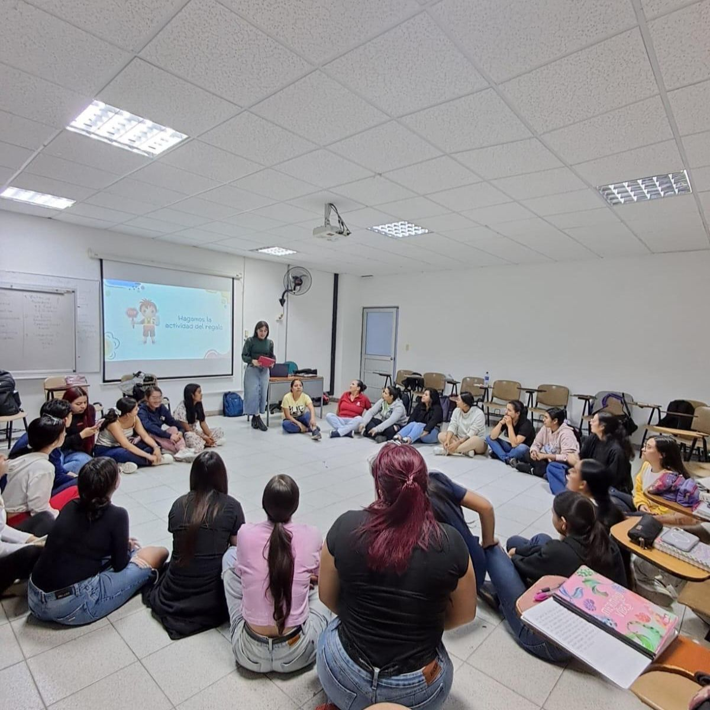

Actividades Didácticas
1 Viaje al Zoológico
La actividad "Viaje al Zoológico" fue una estrategia pedagógica diseñada para fortalecer los aprendizajes matemáticos desde una experiencia dinámica y motivadora. Se desarrolló a través de un juego de mesa y un recorrido dirigido por diferentes estaciones organizadas en el patio del colegio.
Al finalizar el recorrido, cada estudiante llegó a una estación donde debía resolver una operación matemática con apoyo de material concreto. Las operaciones trabajadas incluyeron sumas, restas, identificación de conjuntos, reconocimiento de colores y formas geométricas, y conteo de cantidades.
A través de esta actividad también se hicieron presentes las situaciones didácticas propuestas por Guy Brousseau: la situación de acción se evidenció cuando los estudiantes interactuaron directamente con el material; la situación de formulación se presentó al expresar los procedimientos para resolver las operaciones; la situación de validación se manifestó cuando verificaban sus respuestas; y la situación de institucionalización ocurrió al finalizar cuando la docente explicó y reforzó los conceptos trabajados.


2 Jugando con los Dados
La actividad "Jugando con los Dados" fue una estrategia pedagógica diseñada para fortalecer el aprendizaje matemático a través del juego y la manipulación de material concreto. Durante la actividad, se utilizaron dados con diferentes representaciones numéricas: algunos mostraban los números en cifra y otros con puntos, permitiendo que los estudiantes realizaran asociaciones entre cantidad y número.
A partir del lanzamiento de los dados, los estudiantes debían identificar los números obtenidos y realizar las operaciones indicadas (suma o resta). Para resolver las operaciones, contaban con material concreto como bolitas de colores o fichas que les permitían representar y verificar los resultados de manera manipulativa.
A través de esta actividad también se evidenciaron las situaciones didácticas propuestas por Guy Brousseau: la situación de acción cuando los estudiantes lanzaban los dados y manipulaban el material; la situación de formulación al explicar cómo resolvían las operaciones; la situación de validación al verificar si los resultados eran correctos; y la situación de institucionalización al formalizar los conceptos trabajados.
3 La Pizzería Fraccionaria
La actividad "La Pizzería Fraccionaria" fue una estrategia pedagógica diseñada para enseñar el concepto de fracciones de manera lúdica y significativa. Para su desarrollo, se ambientó el salón de clase como una pizzería. Las compañeras entregaron una instrucción representando el pedido realizado por el chef, en el cual se indicaban los ingredientes que debían ubicarse en cada porción de la pizza.
A partir de estas indicaciones, los estudiantes debían identificar, distribuir y relacionar las cantidades correspondientes en las diferentes partes de la pizza, permitiendo comprender el concepto de fracciones y su representación en situaciones cotidianas.
A través de esta actividad se fortaleció el aprendizaje de los fraccionarios, el reconocimiento de las partes de un todo y la interpretación de fracciones de manera visual y manipulativa. Además, favoreció el razonamiento lógico, la atención, la creatividad y el trabajo colaborativo.


4 El Mercado Escolar
La actividad "El Mercado Escolar" fue una estrategia pedagógica diseñada para fortalecer el aprendizaje matemático y las habilidades sociales mediante la simulación de una experiencia de compra en una tienda. Durante la actividad, cada estudiante recibió una determinada cantidad de dinero ficticio con el propósito de comprar los productos de su preferencia dentro del mercado escolar.
Los estudiantes debían seleccionar los productos, identificar sus precios y realizar el pago correspondiente al tendero, quien posteriormente entregaba los artículos adquiridos. Esta dinámica permitió que los participantes pusieran en práctica operaciones matemáticas básicas como la suma, la resta y el manejo del dinero en situaciones cotidianas y significativas.
Además, esta estrategia favoreció el desarrollo de habilidades como el cálculo mental, la resolución de problemas, la toma de decisiones, la comunicación y el trabajo colaborativo. De igual manera, promovió un aprendizaje dinámico, participativo y significativo, relacionando las matemáticas con experiencias de la vida cotidiana.